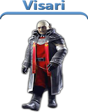
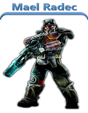
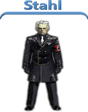
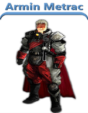
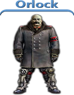

Personajes Principales HELGHAST
Scolar Visari (2307-2359) era el fundador del Imperio Helghast y el autocrata de Helghan, sirviendo como principal antagonista de la saga. Era un jefe militar, violento y ambicioso, que unió Helghan gracias a su carismatico y despiadado liderazgo. Se preocupo por su gente, mientras tenía una visión fuerte y orgullosa de Helghan mientras se vengaba de las Naciones Unidas Coloniales tras la derrota de los Helghast en la Primera Guerra Extrasolar. Fue asesinado por Rico Velasquez en el Palacio de Visari.
El Coronel Mael Radec es el líder de las fuerzas Helghast defensor de la capital de Helghan Pyrrhus, fundador de la Academia Radec, guardaespaldas de Scolar Visari y el antagonista de Killzone 2. Es un líder implacable y astuto, trata de ganar los códigos de lanzamiento de arma nuclear, está a cargo de las fuerzas de defensa helghan y mata a Jan Templar y Batton Evelyn . Él lleva la defensa final del palacio de visari y se enfrenta a Sev y Rico. Él es el jefe final del juego.
Casi no se sabe nada de Jorhan Stahl antes de los acontecimientos de Killzone 3, pero es posible que creara varias estrategias del ejercito helghast, también era un fuerte colaborador de Visari, pero no de su causa. Stahl es un hombre delgado, de estatura media, de entre 40 y 50 y que tiene el pelo blanco. Tiene caracteristicas helghas como la crueldad. Aunque sabe pronunciar discursos y es muy inteligente, suele utilizar palabras mal sonantes.
Armin Metrac era un Helghast General y el antagonista principal de Killzone: Liberation . Autarca Scolar Visari ha confiado personalmente Metrac con la tarea de capturar el sur de Vekta . Conocido y temido por sus técnicas de interrogatorio sádicos y brutales tácticas contra civiles y soldados Vekta, se puso lentamente pero con seguridad sobre la conquista del sur.Metrac nació en el siglo 24 en Helghan durante la época de la gran depresión. Era un tipo muy diferente de Helghan, y nació con características similares a las humanas distintivas. Se unió a los militares y demostró ser un buen soldado.
Almirante Orlok era el Ministro de Defensa de la Helghan militar y el antagonista secundario de Killzone 3 , siendo el más confiable consejero del autarca Visari y el segundo al mando del Imperio Helghan . Después de la muerte de Visari, el que él y Consejo Superior de dirigir la nación Helghan. Él es finalmente nombrado el nuevo Autarca. Antes y durante su reinado como el líder de los Helghast, que comparte una amarga rivalidad con el Presidente Stahl , que intenta usurpar el imperio de los Helghast.